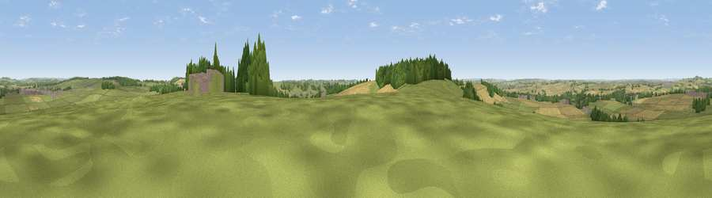

Viewpoint near Firsdown
#14902 in England · top 10% of its area beats it · near FirsdownThe view, rendered

A 360° render of this exact spot computed from the terrain model, tree cover and land cover — summer colours, afternoon light, calibrated against photographs of famous viewpoints. Real trees, hedges and buildings will differ in detail.
The panorama
Grey silhouette: terrain skyline in each direction (720 bearings, Earth curvature and refraction included). Dashed green: skyline with trees (+15 m) and buildings (+8 m) as obstacles. Blue strip: how far the ground is visible on each bearing.
Where the view opens
Wedge length = distance to the farthest visible ground on that bearing (vegetation-aware). Rings at 10, 25 and 50 km.
What fills the view
47% grassland · 36% cropland · 14% woodland · 3% built-up
Angular shares of the visible panorama (visual magnitude), not map area. Landscape diversity 0.48 (0–1 Shannon).
Key numbers
More beautiful places nearby
The staircase of upgrades: each row has a higher view potential than everything closer. Driving times are estimates from straight-line distance, calibrated against real road routing — check an actual route before setting out.
| Place | Direction | Drive | Score |
|---|---|---|---|
| Cockey Down | SW · 4 km | ~10 min | 60.3 |
| Kent's Wood | E · 7 km | ~14 min | 60.9 |
| Viewpoint near Bulford | N · 8 km | ~16 min | 70.3 |
| Viewpoint near Oare | N · 29 km | ~46 min | 72.9 |
| Martinsell viewpoint | N · 29 km | ~46 min | 77.3 |
| Viewpoint near Berwick St John | WSW · 31 km | ~49 min | 78.2 |
| West High Down | SSE · 51 km | ~72 min | 79.8 |
| Tennyson Down | SSE · 51 km | ~72 min | 83.2 |
51.11280, -1.70674 · source: screening · position refined by local search. Computed location — check access rights before visiting.